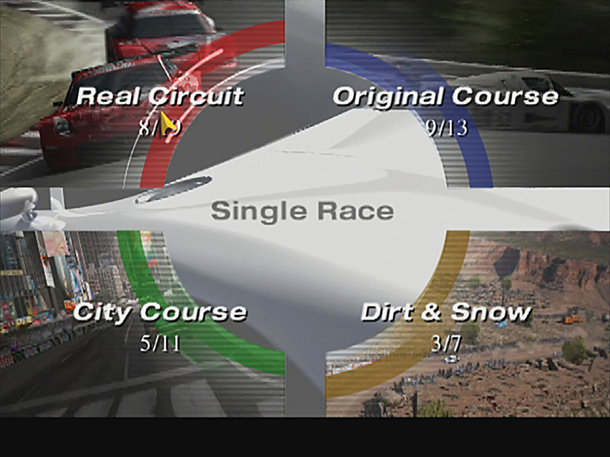

Gran Turismo 4
Gran Turismo 4 foi um dos jogos mais esperados para o PS2, não só por que vem de uma série de sucessso em apresentar corridas de maneira realista, como também sofreu diversos atrasos quanto ao lançamento. Porém, em 22 de fevereiro de 2005 Gran Turismo 4 (GT4), O jogo apresenta mais de 721 carros de 80 fabricantes, desde o Daimler Motor Carriage de 1886, até no futuro, como conceitos para 2022. O jogo também apresenta 51 pistas, muitas das quais são versões novas ou modificadas do antigo Gran Turismo. Números impressionantes que lhe concedeu inúmeros prêmios e uma ótima recepção do público.
Algo a ser dito sobre a franquia Gran Turismo, é que a mesma não se trata apenas de se ligar o videogame e sair "cantando pneu" sobre os outros participantes da corrida. Mais do que isso, desde o PSOne a série se destacou por exigir movimentos precisos do jogador, desde a preparação para as curvas até o pressionar moderado do botão de aceleração e freio. Em Gran Turismo 4 a história se repete. Antes do início de cara corrida, é desejável que sejam revistas todas as configurações das peças do veículo

Gran Turismo 4 possui modelagens e efeitos de luzes adequados, porém, nunca é demais lembrar que dentre os 700 modelos de veículos disponíveis, alguns deles se tratam apenas de carros com variações de performance, mas com a mesma carroceria (vide Mitsubishi 3000 GT). A trilha sonora é variada e um tanto heterogênea, já que temas clássicos passeiam ao mesmo tempo em que entram melodias do heavy metal.
Gran Turismo 4 foi bem recebido pela crítica e um sucesso comercial, tornando-se um dos jogos mais vendidos de 2005 e o terceiro jogo mais vendido no PlayStation 2. Os lançamentos chineses, japoneses e sul-coreanos do jogo foram agrupados com um guia de direção de 212 páginas e aulas de física das corridas. Uma porta aprimorada para PlayStation Portable intitulada Gran Turismo Mobile foi originalmente planejada para desenvolvimento, mas mais tarde foi renomeada para Gran Turismo , que foi lançada em 1º de outubro de 2009.
site do gran turismo 4